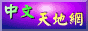
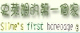

|  | 中文天地網 : 一個非常棒的軟體下載網站 , 而且站長收集了很多中文化程式 , 造福許多不懂英文的人 。 |
|  | 史萊姆的第一個家 : 這是一個非常不錯的網站 , 提供許多共享軟體分類詳細,程式極多不錯哦。 |
| SunYangStatio軟體資訊服務 : 一個非常棒的網站 , 提供許多別的網站未曾見到的程式 , 分類詳細而且也有Thmem可下載。 | |
| 叮噹屋 : 軟體下載的好地方 , 還有提供midi以及Thmem。 | |
| 首頁製作百寶箱 : 一個非常棒的網站 , 提供首頁製作教學 ,不會 Java , HTML 的人不用怕只要來一趟保證您也會製作網頁。 | |
| 桌面王 : 與魅影工作室一樣提供 佈景主題 螢幕保護程式 開關機畫面 等檔案下載的網站 , 非常不錯ㄡ。 |